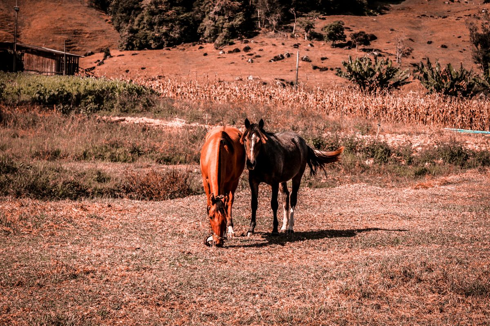

La app resuelve la ración sola y es gratis — eso es lo que recomiendo empezar. Pero si quieres una segunda mirada sobre lo que come tu caballo, o tienes un plantel completo, hay dos formas de trabajar juntos.
Me mandas fotos de tu caballo, sus medidas de huincha y qué está comiendo hoy. Te devuelvo un informe en PDF con la ración corregida, el porqué de cada cambio y cómo hacer la transición sin apurarla.
Entrega en 5 días hábiles. Es una revisión de alimentación, no un diagnóstico clínico: si tu caballo está enfermo, con cólicos a repetición o bajando de peso sin causa clara, eso lo ve tu veterinario primero.
Si prefieres que revise tus caballos yo mismo, donde están, también existe esa opción — trabajo directo contigo y no solo a través de la pantalla.

Voy a ver tus caballos donde están: reviso condición corporal, alimentación actual y manejo. En persona, no por foto.
Un plan nutricional hecho para tus caballos, tus alimentos y tu presupuesto. Nada de plantillas genéricas.
Qué darle antes y después de correr para que rinda y se recupere bien, sin improvisar.
Las dudas del día a día las resuelves conmigo, cuando aparecen — no con un formulario.
Cuánto gastas por caballo en comida y suplementos, al día y al mes — con opción de calcularlo para todo el criadero.
Disponible desde 1 collera en adelante — y es la vía para criaderos y planteles completos.
Reviso la alimentación de un caballo con lo que me mandes — fotos, medidas de huincha y qué come hoy — y te devuelvo un informe en PDF con la ración corregida, el porqué de cada cambio y cómo hacer la transición. Son $10.000 por caballo, se paga por transferencia antes de empezar y llega en 5 días hábiles. No incluye visita ni diagnóstico clínico: si el caballo está enfermo o bajando de peso sin causa clara, eso lo ve tu veterinario.
No, y no pretende hacerlo. Lo que reviso es la alimentación: qué come tu caballo, cuánto y por qué. Ante enfermedades, dietas especiales o casos complejos, el que decide es tu veterinario tratante — y si el caso lo necesita, te lo voy a decir yo mismo.
Trabajo desde Concepción y me muevo por la región y alrededores. El traslado se conversa aparte según la distancia, y siempre lo sabes antes de comprometer nada. Para saber si tu campo entra, lo más rápido es escribirme por WhatsApp.
No es obligatorio, pero ayuda: la ración que sale del informe queda cargada en la app y desde ahí la ajustas cuando cambie el peso, el trabajo o la condición de tu caballo. Sin la app, el informe es una foto del momento; con la app, se mantiene al día.
Escríbeme por WhatsApp y te respondo yo mismo — sobre nutrición, manejo o cualquiera de los dos servicios.
Hacer una consultaEs gratis, calcula la ración de tu caballo en cuatro pasos y no necesita tarjeta. La mayoría resuelve con eso; el servicio existe para cuando quieres una mirada encima.